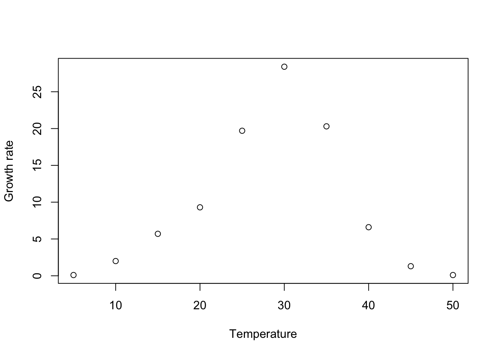
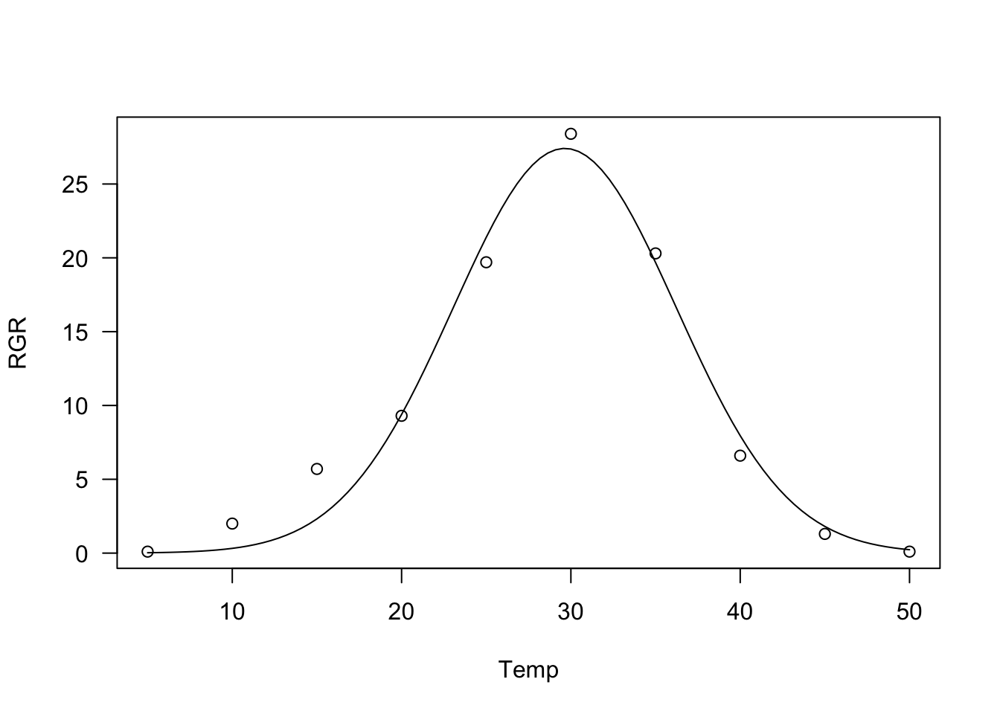

library(drc)
Temp <- c(5, 10, 15, 20, 25, 30, 35, 40, 45, 50)
RGR <- c(0.1, 2, 5.7, 9.3, 19.7, 28.4, 20.3, 6.6, 1.3, 0.1)
plot(RGR ~ Temp, xlim = c(5, 50),
xlab = "Temperature", ylab = "Growth rate")
(Post updated on 17/07/2023) In R, the drc package represents one of the main solutions for nonlinear regression and dose-response analyses (Ritz et al., 2015). It comes with a lot of nonlinear models, which are useful to describe several biological processes, from plant growth to bioassays, from herbicide degradation to seed germination. These models are provided with self-starting functions, which free the user from the hassle of providing initial guesses for model parameters. Indeed, getting these guesses may be a tricky task, both for students and for practitioners.
Obviously, we should not expect that all possible models and parameterisations are included in the ‘drc’ package; therefore, sooner or later, we may all find ourselves in the need of building a user-defined function, for some peculiar tasks of nonlinear regression analysis. I found myself in that position several times in the past and it took me awhile to figure out a solution.
In this post, I’ll describe how we can simply build self-starters for our nonlinear regression analyses, to be used in connection with the ‘drm()’ function in the ‘drc’ package. In the end, I will also extend the approach to work with the ‘nls()’ function in the ‘stats’ package.
Let’s consider the following dataset, depicting the relationship between temperature and growth rate. We may note that the response reaches a maximum value around 30°C, while it is lower below and above such an optimal value.
library(drc)
Temp <- c(5, 10, 15, 20, 25, 30, 35, 40, 45, 50)
RGR <- c(0.1, 2, 5.7, 9.3, 19.7, 28.4, 20.3, 6.6, 1.3, 0.1)
plot(RGR ~ Temp, xlim = c(5, 50),
xlab = "Temperature", ylab = "Growth rate")
The Bragg equation can be a good candidate model for such a situation. It is characterized by a bell-like shape:
\[ Y = d \, \exp \left[- b \, (X - e)^2 \right] \]
where \(Y\) is the observed growth rate, \(X\) is the temperature, \(d\) is the maximum level for the expected response, \(e\) is the abscissa at which such maximum occurs and \(b\) is the slope around the inflection points (the curve is bell-shaped and shows two inflection points around the maximum value). Unfortunately, such an equation is not already available within the drc package. What should we do, then?
First of all, let’s write this function in the usual R code. In my opinion, this is more convenient than writing it directly within the drc framework; indeed, the usual R coding is not specific to any packages and can be used with all other nonlinear regression and plotting facilities, such as nls(), or nlme(). Let’s call this new function bragg.3.fun().
# Definition of Bragg function
bragg.3.fun <- function(X, b, d, e){
d * exp(- b * (X - e)^2)
}In order to transport ‘bragg.3.fun()’ into the drc platform, we need to code a function returning a list of (at least) three components:
Optionally, we can also include a descriptive text, the derivatives and other useful information. This is the skeleton code, which I use as the template.
MyNewDRCfun <- function(){
fct <- function(x, parm) {
# function code here
}
ssfct <- function(data){
# Self-starting code here
}
names <- c()
text <- "Descriptive text"
## Returning the function with self starter and names
returnList <- list(fct = fct, ssfct = ssfct, names = names, text = text)
class(returnList) <- "drcMean"
invisible(returnList)
}The two functions fct() and ssfct() are called internally by the drm() function and, therefore, the list of arguments must be defined exactly as shown above. In detail, fct() receives two arguments as inputs: the predictor \(X\) and the dataframe of parameters, with one row and as many columns as there are parameters in the model. The predictor and parameters are used to return the vector of responses; in the code below, I am calling the function bragg.3.fun() from within the function fct(). Alternatively, the Bragg function can be directly coded within fct().
fct <- function(x, parm) {
bragg.3.fun(x, parm[,1], parm[,2], parm[,3])
}The function ssfct() receives one argument as input, that is a dataframe with the predictor in the first column and the observed response in the second. These two variables can be used to calculate the starting values for model parameters. In order to get a starting value for \(d\), we could take the maximum value for the observed response, by using the function max(). Likewise, to get a starting value for \(e\), we could take the positioning of the maximum value in the observed response and use it to index the predictor. Once we have obtained a starting value for \(d\) and \(e\), we can note that, from the Bragg equation, with simple math, we can derive the following equation:
\[ \log \left( \frac{Y}{d} \right) = - b \left( X - e\right)^2\]
Therefore, if we transform the observed response and the predictor as above, we can use polynomial regression to estimate a starting value for \(b\). In the end, this self starting routine can be coded as follows:
ssftc <- function(data){
# Get the data
x <- data[, 1]
y <- data[, 2]
d <- max(y)
e <- x[which.max(y)]
## Linear regression on pseudo-y and pseudo-x
pseudoY <- log( y / d )
pseudoX <- (x - e)^2
coefs <- coef( lm(pseudoY ~ pseudoX - 1) )
b <- coefs[1]
return( c(b, d, e) )
}It may be worth to state that the self-starting function may be simply skipped by specifying starting values for model parameters, right inside ssfct() (see Kniss et al., 2011).
Now, let’s ‘encapsulate’ all components within the skeleton function given above:
DRC.bragg.3 <- function(){
fct <- function(x, parm) {
bragg.3.fun(x, parm[,1], parm[,2], parm[,3])
}
ssfct <- function(data){
# Get the data
x <- data[, 1]
y <- data[, 2]
d <- max(y)
e <- x[which.max(y)]
## Linear regression on pseudo-y and pseudo-x
pseudoY <- log( y / d )
pseudoX <- (x - e)^2
coefs <- coef( lm(pseudoY ~ pseudoX - 1) )
b <- - coefs[1]
start <- c(b, d, e)
return( start )
}
names <- c("b", "d", "e")
text <- "Bragg equation"
## Returning the function with self starter and names
returnList <- list(fct = fct, ssfct = ssfct, names = names, text = text)
class(returnList) <- "drcMean"
invisible(returnList)
}Once the DRC.bragg.3() function is ready, it can be used as the value for the argument fct in the drm() function call.
mod <- drm(RGR ~ Temp, fct = DRC.bragg.3())
summary(mod)
Model fitted: Bragg equation
Parameter estimates:
Estimate Std. Error t-value p-value
b:(Intercept) 0.0115272 0.0014506 7.9466 9.513e-05 ***
d:(Intercept) 27.4122086 1.4192874 19.3141 2.486e-07 ***
e:(Intercept) 29.6392304 0.3872418 76.5393 1.710e-11 ***
---
Signif. codes: 0 '***' 0.001 '**' 0.01 '*' 0.05 '.' 0.1 ' ' 1
Residual standard error:
1.71838 (7 degrees of freedom)plot(mod, log = "")
Yes, I know, some of you may prefer using the function nls(), within the stats package. In that platform, we can directly use bragg.3.fun() as the response model:
mod.nls <- nls(RGR ~ bragg.3.fun(Temp, b, d, e),
start = list (b = 0.01, d = 27, e = 30))However, we are forced to provide starting values for all estimands, which might be a tricky task, unless we build a self-starting routine, as we did before for the drc platform. This is not an impossible task and we can also re-use part of the code we have already written above. We have to:
sortedXyData(mCall[["X"]], LHS, data). The part in quotation marks (“X”) should correspond to the name of the predictor in the bragg.3.fun() function definition.selfStart() function to combine the function with its self-starting routine.bragg.3.init <- function(mCall, LHS, data, ...) {
xy <- sortedXyData(mCall[["X"]], LHS, data)
x <- xy[, "x"]; y <- xy[, "y"]
d <- max(y)
e <- x[which.max(y)]
## Linear regression on pseudo-y and pseudo-x
pseudoY <- log( y / d )
pseudoX <- (x - e)^2
coefs <- coef( lm(pseudoY ~ pseudoX - 1) )
b <- - coefs[1]
start <- c(b, d, e)
names(start) <- mCall[c("b", "d", "e")]
start
}
NLS.bragg.3 <- selfStart(bragg.3.fun, bragg.3.init, parameters=c("b", "d", "e"))Now, we can use the NLS.bragg.3() function in the nls() call:
mod.nls <- nls(RGR ~ NLS.bragg.3(Temp, b, d, e) )
summary(mod.nls)
Formula: RGR ~ NLS.bragg.3(Temp, b, d, e)
Parameters:
Estimate Std. Error t value Pr(>|t|)
b 0.011527 0.001338 8.618 5.65e-05 ***
d 27.411715 1.377361 19.902 2.02e-07 ***
e 29.638976 0.382131 77.562 1.56e-11 ***
---
Signif. codes: 0 '***' 0.001 '**' 0.01 '*' 0.05 '.' 0.1 ' ' 1
Residual standard error: 1.718 on 7 degrees of freedom
Number of iterations to convergence: 8
Achieved convergence tolerance: 5.213e-06I have been building a lot of self-starters, both for drm() and for nls() and I have shared them within my statdforbiology package. Therefore, should you need to fit some unusual nonlinear regression model, it may be worth to take a look at that package, to see whether you find something suitable.
That’s it, thanks for reading! And … don’t forget to check out my new book!
Prof. Andrea Onofri
Department of Agricultural, Food and Environmental Sciences
University of Perugia (Italy)
Send comments to: andrea.onofri@unipg.it